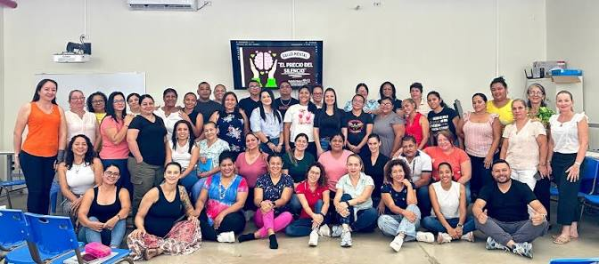
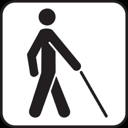
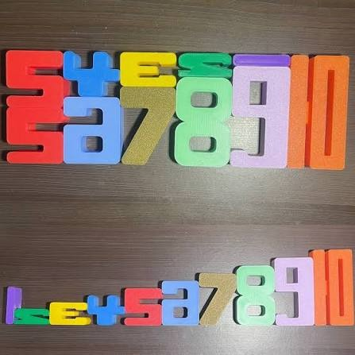
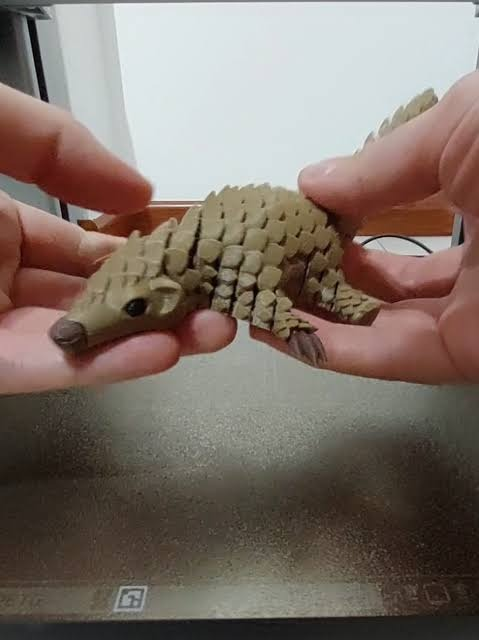
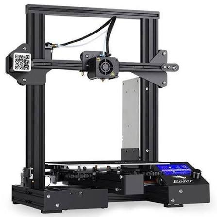
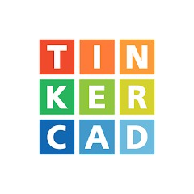
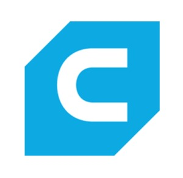
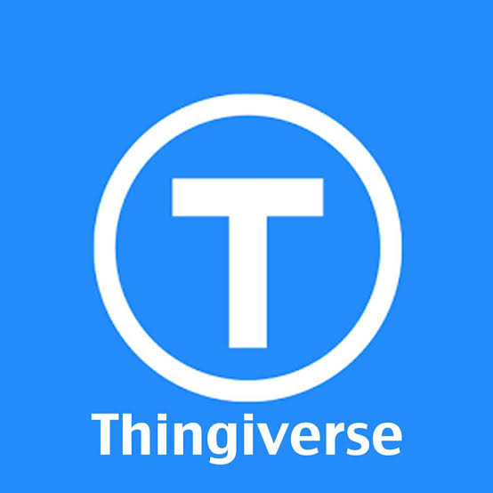
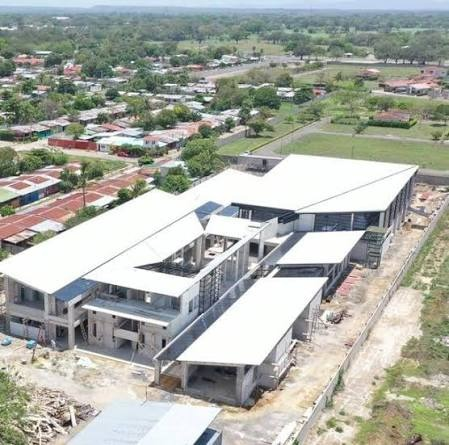

Aplicación de un modelo de programación lineal para su selección y diseño óptimo
Integrantes del Proyecto:
Manuel Josué Cárdenas Sánchez | Ashly Yariella Espinoza Godínez

Estudiantes con discapacidad visual a cargo de la profesora Susan Soto, quienes requieren material palpable para su desarrollo académico y psicomotriz.
La oferta de material táctil no siempre se adapta al currículo específico. El reto es decidir qué herramientas priorizar para generar el mayor impacto educativo posible durante el ciclo lectivo mediante un modelo analítico.

"¿De qué manera un modelo de Programación Lineal permite determinar el conjunto óptimo de materiales didácticos táctiles que maximice la cobertura curricular y el valor pedagógico para los estudiantes con discapacidad visual, sujeto a las restricciones de tiempo de búsqueda y adaptación del equipo investigador?"
Diseñar y proveer un conjunto óptimo de material didáctico táctil utilizando un modelo de programación lineal que maximice la utilidad pedagógica bajo restricciones de tiempo.

Enfoque en maximizar el impacto pedagógico total basado en el Puntaje de Prioridad Pedagógica.

Herramienta idónea para la creación de adaptaciones personalizadas. La tecnología 3D actúa como medio, mientras que el núcleo reside en el diseño matemático para seleccionar la combinación de mayor beneficio.


Suministrar material didáctico táctil adecuado que facilite la comprensión de los contenidos y favorezca el proceso de aprendizaje.
Ofrecer una alternativa personalizada, accesible y adaptada, permitiendo que los estudiantes tengan una experiencia más práctica y comprensible.


Curva de aprendizaje del equipo; posibles problemas de dimensiones.
Riesgo de bordes inadecuados o relieves poco comprensibles.
La edición de modelos puede afectar el cronograma si no se prioriza bien.
El proyecto es completamente viable debido a:

| Mes | Fases Principales |
|---|---|
| Agosto 2026 | Evaluación de propuestas, identificación de necesidades, búsqueda y adaptación de modelos 3D, configuración inicial. |
| Septiembre 2026 | Creación de prototipos, asignación de puntajes pedagógicos, aplicación del modelo matemático. |
| Octubre 2026 | Manufactura de piezas, validación con la docente, corrección e impresión final del material. |
| Noviembre 2026 | Entrega de informe final, presentación y defensa del proyecto. |
Por su atención.